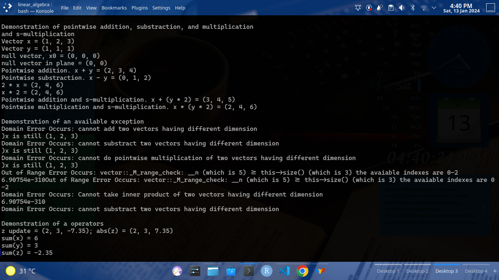
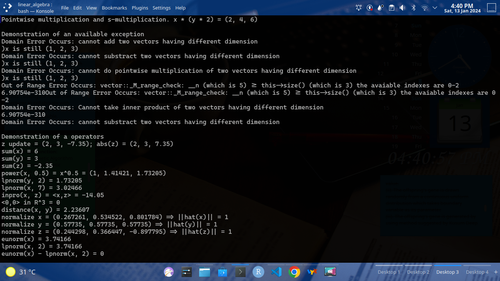

1 Introduction
C++ is a programming language created by Bjarne Strostup, and originally it’s intended to be a superset of C programming language since in C++ we could create a class . So, we can do the so-called object oriented programming (Stroustrup, B., 2020). One of useful header file of C++ is vector. Unlike an ordinary array, where once we have declared an array of fixed length, once we try to add another element to an ordinary array which exceed its length, it will cause an error. Meanwhile, if we declare something like the following code
it will not produce an error, and the elements of v after 4.3 is included in v are 1.0, 2.0, 3.0, and 4.3.
\(\quad\) Nevertheless, the problem arise when we try to treate std::vector<double> v {1.0, 2.0, 3.0} as a vector in linear algebra. For example, we want to do a pointwise addition and s-multiplication as follows
std::vector<double> v {1.0, 2.0, 3.0};
std::vector<double> u = v + v; // produce an error
double sc = 3.5;
std::vector<double> w = sc * v; // also produce an errorWe expect that u is a vector having \((2.0,4.0,6.0)\) as its elements, and w is a vector having \((3.5,7.0,10.5)\) as its element. Instead, we got an error.
\(\quad\) If only std::vector support pointwise addition and s-multiplication, then we capable to do a numerical computation, extensively. Especially, computation of vectors in linear algebra, which has various application. The following passages discuss about the applications of vectors in linear algebra and the use of std::vector.
\(\quad\) In Artinez, C., et al. (2018), they explained genetic algorithms construction to solve real-parameter optimization problem, the solutions of the problem (individuals) are encoded as the elements of \(\mathbb{R}\)-vector space. The crossover operator of genetic algorithm takes a pair of vectors as its input and produced another vectors as its output. And so for its mutation operator, the only different is that mutation operator takes only one vector as its input and produce one vector as its output. A genetic algorithms where the individuals are encoded (represented) in vectors is called real-coded genetic algorithms. One of main research in this subject is how to develop a better crossover and mutation operators. A review about genetic algorithms was done by Katoch S., et al. (2021), where in this paper, Katoch S., et al. provide a table for different name and mathematical formulation of crossover and mutation operators, and it is so often that crossover and mutation operators use pointwise addition and s-multiplication in its mathematical formulation. Pointwise addition and s-multiplication in computation of vectors in linear algebra also used in differential evolution algorithms, and a great review of this method and its application was done by Bilal et al., (2020).
\(\quad\) One of advance computation of the use of std::vector is SU3lib, a C++ library for computation of Wigner and Racah coefficients of SU(3) by Dytrych, T. et al. (2021). In this paper, std::vector<double> data type is used as representation of the arrangement of resulting coefficients as a linear array.
\(\quad\) There is a C++ standard library header specialize in the computation of linear algebra called linalg, which capable to perform pointwise addition and s-multiplication. Nevertheless, it is a good practice to develope our own header, at least once in a lifetime. Therefore, in this article, we develope a C++ header called linav.h which stand for vector in linear algebra, and we develope linav.h as an extension of std::vector. By using linav.h, computation with regards to vector in linear algebra is possible.
\(\quad\) This paper is organized as follows. Section 2 is the discussion of theory and computation with regards to vectors in linear algebra. In section 2, we have definition of abstract vector space for which the definition of \(\mathbb{R}^{n}\)-vector spaces is defined thereof, pointwise (elementwise) operators, linear maps, and finally the \(\ell_{p}\)-norm. In section 3, we implement the abstract concept of mathematics into real programming language C++. Section 4 is results and discussion, in this section we provide a table of summary of computation. Finally, we conclude our discussion in section 5.
\(\quad\) If the honourable reader is only interested in the applications of things, then he/she may skip section 2. If the honourable reader is interested in science of computation, especially in numerical computation, then it is recommended for he/she to read section 2.
2 Theory and Computation
2.1 Abstract Vector Space and Space of \(\mathbb{R}^n\)
Definition 1 (abstract vector space) The vector space of a set \(V\) is the triplet \((V,+,\cdot)\) where \(+\colon V\times V\to V\) and \(\cdot\colon \mathbb{R}\times V\to V\) are known as pointwise addition and s-multiplication, respectively. Which \(\forall\vec{x},\vec{y},\vec{z}\in V\) and \(\forall\lambda,\mu\in\mathbb{R}\) satisfy the following 8 axioms (Dadhley, R., 2019; Körner, T.W., 2012).
(1). [the commutative law] \(\vec{x}+\vec{y}=\vec{y}+\vec{x}\)
(2). [the associative law] \((\vec{x}+\vec{y})+\vec{z}=\vec{x}+(\vec{y}+\vec{z})\)
(3). [the existance of neutral element] \(\exists\vec{0}\in V\colon\forall\vec{x}\in V\colon\vec{x}+\vec{0}=\vec{x}\)
(4). [the existance of inverse element] \(\forall\vec{x}\in V\colon\exists\vec{x}^{\prime}\in V\colon\vec{x}+\vec{x}^{\prime}=\vec{0}\)
(5). [the associative law] \(\lambda\cdot(\mu\cdot\vec{x})=(\lambda\cdot\mu)\cdot\vec{x}\)
(6). [the distributive law] \((\lambda+\mu)\vec{\cdot x}=\lambda\cdot\vec{x}+\mu\cdot\vec{x}\)
(7). [the distributive law] \(\lambda\cdot(\vec{x}+\vec{y})=\lambda\cdot\vec{x}+\lambda\cdot\vec{y}\)
(8). [the existance of unitary element] \(\exists\iota\in\mathbb{R}\colon\forall\vec{x}\in V\colon\iota\cdot\vec{x}=\vec{x}\)
Remark. The element of vector space \((V,+,\cdot)\) is called vector, conviniently.
Definition 2 Let \((U,+,\cdot)\) and \((V,+,\cdot)\) are vector spaces s.t. \(U\subseteq V\), then \(U\) is defined as the subspace of \(V\).
Definition 3 The set \(\mathbb{R}^{n}\coloneqq\mathbb{R}\times\mathbb{R}\times\cdots\times\mathbb{R}\) is the set of n-tuples of all real numbers i.e., \[ \mathbb{R}^{n}\coloneqq\{(x_{1},x_{2},\cdots,x_{n})\colon\forall i=1,2,\ldots,n,\,x_{i}\in\mathbb{R}\} \]
Remark. One of special case of \(\mathbb{R}^{n}\) is when \(n=2\) or \(n=3\), i.e., \[ \mathbb{R}^{2}\coloneqq\{(x_{1},x_{2})\colon x_{1},x_{2}\in\mathbb{R}\}\quad\text{or }\quad\mathbb{R}^{3}\coloneqq\{(x_{1},x_{2},x_{3})\colon x_{1},x_{2},x_{3}\in\mathbb{R}\} \]
and the element of \(\mathbb{R}^{n}\) is called a point in \(\mathbb{R}^{n}\).
Notation. n-tuple of a real number is denoted by a letter with an arrow on that letter. E.g., \(\vec{x},\vec{y},\vec{z},\text{etc.}\) Thereby, if \(\vec{x}\in\mathbb{R}^{3}\) and \(\vec{y}\in\mathbb{R}^{3}\) s.t. \(\vec{x}=(x_{1},x_{2})^{\top}\) and \(\vec{y}=(y_{1},y_{2},y_{3})^{\top}\), then \(\vec{x}\) is a point in \(\mathbb{R}^{2}\) and \(\vec{y}\) is a point in \(\mathbb{R}^{3}\).
By using the definition of abstract vector space, we are capable to construct the vector space of \(\mathbb{R}^{n}\).
Example 1 (\(\mathbb{R}^n\) vector space) The following triplet \((\mathbb{R}^{n},+,\cdot)\) is a vector space s.t. if the pointwise addition and s-multiplication are defined as follows
(i). [pointwise addition] \(+\colon\mathbb{R}^{n}\times\mathbb{R}^{n}\to\mathbb{R}^{n}\) s.t. \[ \forall\vec{x},\vec{y}\in\mathbb{R}^{n}\colon(\vec{x},\vec{y})\mapsto\vec{x}+\vec{y}\coloneqq(x_{1}+y_{1},x_{2}+y_{2},\ldots,x_{n}+y_{n})^{\top} \tag{1}\]
(ii). [s-multiplication] \(\cdot\colon\mathbb{R}\times\mathbb{R}^{n}\to\mathbb{R}^{n}\) s.t. \[ \forall\lambda\in\mathbb{\mathbb{R}}\colon\forall\vec{x}\in\mathbb{R}^{n}\colon(\lambda,\vec{x})\mapsto\lambda\cdot\vec{x}=(\lambda x_{1},\lambda x_{2},\ldots,\lambda x_{n})^{\top} \tag{2}\]
then it satisfy the 8 axioms stated in the definition of abstract vector spaces.
Proof. The existance of the neutral element for \(\mathbb{R}^{n}\) is the \(n\)-tuple s.t. all elements such \(n\)-tuple are zero, i.e., \(\vec{0}=(0,0,\ldots,0)^{\top}.\) If \(\vec{0}\) is called as a null vector and \(\vec{0}\in\mathbb{R}^{n}\), then \(\vec{0}\) is defined as the null vector in \(\mathbb{R}^{n}\). thus, \(\forall\vec{x}\in\mathbb{R}^{n}\colon\vec{x}+\vec{0}=\vec{x}\).
The existance of the inverse element can be showed by observing the s-multiplication of \(\forall\vec{x}\) by \(-1\) is \(-\vec{x}=(-x_{1},-x_{2},\ldots,-x_{n})^{\top}\) and \(-\vec{x}\in\mathbb{R}^{n}\). Thus, \(\forall\vec{x}\in\mathbb{R}\colon\vec{x}+(-1)\cdot\vec{x}=\vec{0}\).
The existance of unitary element of \(\mathbb{R}\) is \(1\), so we have that \(\forall\vec{x}\in\mathbb{R}^{n}\colon1\cdot\vec{x}=\vec{x}\). The rest is trivial. After checking all \(8\)-axioms stated in the definition of abstract vector space (Definition 1), we have that the following triplet \((\mathbb{R}^{n},+,\cdot)\) indeed a vector spaces.
\(\square\)
2.2 Pointwise Operators from \(\mathbb{R}^n\) to Itself
From previous section we have seen 2 pointwise operators namely, pointwise addition and s-multiplication. Notice that these operators are not addition and multiplication of real numbers, instead, pointwise addition operator is addition for vector space. Similarly, the s-multiplication is multiplication of real number and vector which yields a vector.
\(\quad\) In order to understand what we mean by this, observe the distributive law in the definition of vector space, it’s stated that \(\forall\vec{x}\in V,\forall\lambda,\mu\in\mathbb{R}\colon(\lambda+\mu)\cdot\vec{x}=\lambda\cdot\vec{x}+\mu\cdot\vec{x}\), more explicitly, this axiom can be rewritten as follow
\[ \forall\vec{x}\in V\colon\forall\lambda,\mu\in\mathbb{R}\colon(\lambda+_{\mathbb{R}}\mu)\cdot_{V}\vec{x}=\lambda\cdot_{V}\vec{x}+_{V}\mu\cdot_{V}\vec{x} \tag{3}\]
observe the subscript of each operator. On the left hand side, we have that \(+_{\mathbb{R}}\) is addition operator on two real numbers, meanwhile, on the right hand side, we only have \(+_{V}\) which is pointwise addition, for which it’s addition on the vector space \(V\), which is different from \(+_{\mathbb{R}}\).
\(\quad\) For the case of s-multiplication, observe the associative law in the definition of vector space, this axiom can be rewritten more explicitly as follow
\[ \forall\vec{x}\in\mathbb{R}^{n}\colon\forall\lambda,\mu\in\mathbb{R}\colon(\lambda\cdot_{\mathbb{R}}\mu)\cdot_{V}\vec{x}=\lambda\cdot_{V}(\mu\cdot_{V}\vec{x}) \tag{4}\]
on the left hand side, we have \(\cdot_{\mathbb{R}}\) on \((\lambda\cdot_{\mathbb{R}}\mu)\) which is multiplication of 2 real numbers, meanwhile, on the right hand side we only have \(\cdot_{V}\) which is s-multiplication, a multiplication of real number and vector which yields a vector, and it’s different multiplication from \(\cdot_{\mathbb{R}}\).
\(\quad\) At the first glimpse, perharps our honorable readers think these are just what every gentleman and lady know, the subscript on the pointwise addition and s-multiplication i.e., \(+_{V}\) and \(\cdot_{V}\) just “unnecessary abstraction”, apperently. However, in the computation point of view— which is application of these “unnecessary abstraction”—it turn out that it serves clarity of what kind of object that we need, and what operators which take those object as its input and what kind of object that the output will produce (Dadhley, R., 2019). Another operators which take a vector as its input and produce a vector beside pointwise addition and s-multiplication are pointwise subtraction, multiplication, powered by, absolute value, and normalize vector.
\(\quad\) We compute the pointwise addition as it is defined, and so for the s-multiplication, i.e, for pointwise addition we have 2 vectors, and then we define a vector which is the addition 2 vectors thereof. Similarly, for s-multiplication, we have a vector and a real number, then we define a vector which is a vector obtained from a vector we have and its components are multiplied by a real number (see Example 1).
\(\quad\) Theoritically, pointwise substraction is a composition of pointwise addition and s-multiplication of two vectors, \(-_{V}\equiv+_{V}\circ\cdot_{V}\) i.e, a pointwise addition after s-multiplication of \(2\) vectors. So, the \(-_{V}\) theoritically defined as
\[ -_{V} \equiv+\circ\cdot\colon V\times (\mathbb{R}\times V)\to V \tag{5}\]
s.t.
\[ \exists\lambda\colon\forall\vec{x}\colon\forall\vec{y}\colon(\vec{x},(\lambda,\vec{y}))\mapsto(\vec{x},\lambda\cdot\vec{y})\mapsto\vec{x}+\lambda\cdot\vec{y} \tag{6}\]
by set \(\lambda=-1\), thus
\[ -_{V}(\vec{x},\vec{y})\equiv\vec{x}+(-1)\vec{y}\eqqcolon\vec{x}-\vec{y} \tag{7}\]
Nevertheless, it’s not practical to compute the pointwise substraction by taking the s-multiplication of vector by \(-1\) and then take its pointwise addition by vector, instead, we just compute the pointwise substraction as we compute the pointwise addition, but we use \(-\) operator on its elements, i.e., if \(\vec{x}=(x_{1,}x_{2},\ldots,x_{n})^{\top}\) and \(\vec{y}=(y_{1},y_{2},\ldots,y_{n})^{\top}\), then the pointwise substraction is a map \(-\colon V\times V \to V\) s.t.
\[ (\vec{x},\vec{y})\mapsto\vec{x}-\vec{y}\coloneqq(x_{1}-y_{1},x_{2}-y_{2},\ldots,x_{n}-y_{n})^{\top} \tag{8}\]
Definition 4 Let \(\vec{x},\vec{y}\in\mathbb{R}^{n}\) and \(\lambda\in\mathbb{R}\), the following are elementwise multiplication, powered by, and absolute value operators for vectors, its map, and its computation.
(1). [elementwise multiplication] \(\ast\colon V\times V \to V\) s.t.
\[ (\vec{x},\vec{y})\mapsto\vec{x}\ast\vec{y}\coloneqq(x_{1}y_{1},x_{2}y_{2},\ldots,x_{n}y_{n})^{\top} \tag{9}\]
(2). [elementwise powered by] \(\text{pow}(\cdot,\cdot)\colon V\times\mathbb{R} \to V\) s.t.
\[ (\vec{x},\lambda)\mapsto\text{pow}(\vec{x},\lambda)\coloneqq(x_{1}^{\lambda},x_{2}^{\lambda},\ldots,x_{n}^{\lambda})^{\top} \tag{10}\]
(3). [elementwise absolute value] \(\text{abs}(\cdot)\colon V \to V\) s.t.
\[ \vec{x}\mapsto\text{abs}(\vec{x})\coloneqq(\vert x_{1}\vert,\vert x_{2}\vert,\ldots,\vert x_{n}\vert)^{\top} \tag{11}\]
we use these operators as it is to do a computation of 2 vectors when involving these operators.
2.3 Linear Maps
Definition 5 (linear maps) Suppose that \((V,+,\cdot)\) and \((W,+,\cdot)\) are vector spaces, let \(\vec{x},\vec{y}\in\mathbb{R}\) and \(\lambda\in\mathbb{R}\), then a map \(\phi\colon V\to W\) is linear if and only if \(\phi\) satisfy the following properties (Körner, T.W., 2012):
(1). \(\phi(\vec{x}+\vec{y})=\phi(\vec{x})+\phi(\vec{y})\)
(2). \(\phi(\lambda\vec{x})=\lambda\phi(\vec{x})\)
Definition 6 (sum of component) Let \((\mathbb{R}^{n},+,\cdot)\) be vector space and \(\vec{x}\in\mathbb{R}^{n}\), then the sum of component of a vector \(\vec{x}\) is defined as \(\text{sum}(\cdot)\colon\mathbb{R}^{n}\to\mathbb{R}\) s.t.
\[ \vec{x}\mapsto\text{sum}(\vec{x})\coloneqq\sum_{i=1}^{n}x_{i}=x_{1}+x_{2}+\cdots+x_{n} \tag{12}\]
for \(\vec{x}=(x_1,x_2,\ldots,x_n)^\top\).
Lemma 1 The sum of component of a vector i.e., \(\text{sum}(\cdot)\) is a linear map.
Proof. In order to prove either a map is linear or not, then we must check such a map satisfy the definition of a linear map. To do so, let \((\mathbb{R}^{n},+,\cdot)\) be vector space.
(1). Observe that for \(\text{sum}(\cdot)\colon\mathbb{R}^{n}\to\mathbb{R}\), by definition
\[ \begin{align} \forall\vec{x},\vec{y}\in\mathbb{R}^{n}\colon\text{sum}(\vec{x}+\vec{y}) &= \sum_{i=1}^{n}(x_{i}+y_{i}) \\ &= \sum_{i=1}^{n}x_{i}+\sum_{i=1}^{n}y_{i} \\ \text{sum}(\vec{x}+\vec{y}) &= \text{sum}(\vec{x})+\text{sum}(\vec{y}) \end{align} \]
(2). Observe that
\[ \begin{align} \forall\vec{x}\in\mathbb{R}^{n}\colon\forall\lambda\in\mathbb{R}\colon \text{sum}(\lambda\vec{x}) &= \sum_{i=1}^{n}\lambda x_{i} \\ &= \lambda\sum_{i=1}^{n}x_{i} \\ \text{sum}(\lambda\vec{x}) &= \lambda\text{ sum}(\vec{x}) \end{align} \]
Thereby, the sum of component operator satisfy definition of a linear map.
\(\square\)
\(\quad\) Theoritically, it’s okay to compute the sum of component by using Definition 6 as it is. However, it is not so when we attempt to compute it by using a programming language like C++. Due to numerical issue, we compute the sum of component \(\text{sum}(\cdot)\colon\mathbb{R}^{n}\to\mathbb{R}\) by using Kahan’s sum algorithm as follows (Solomon, J., 2015).
\begin{algorithm}
\caption{Kahan's sum, $\text{sum}(\cdot)\colon\mathbb{R}^{n}\to\mathbb{R}$}
\begin{algorithmic}
\STATE Define $\vec{x}\in\mathbb{R}^{n}$ s.t., $\vec{x}=(x_{1},x_{2},\ldots,x_{n})^{\top}$
\STATE Let $s,s_{\text{next}},c\in\mathbb{R}$ s.t. $s,s_{\text{next}},c\longleftarrow0$
\FOR{$i\longleftarrow1,2,\ldots,n$}
\STATE $v\longleftarrow x_{i}+c$
\STATE $s_{\text{next}}\longleftarrow s+v$
\STATE $c\longleftarrow v-(s_{\text{next}}-s)$
\STATE $s\longleftarrow s_{\text{next}}$
\ENDFOR
\RETURN $s$
\end{algorithmic}
\end{algorithm}
Definition 7 (the inner product) Let \((\mathbb{R}^{n},+,\cdot)\) be vector space and \(\vec{x},\vec{y}\in\mathbb{R}^{n}\), then the inner product of a two vectors \(\vec{x}\) and \(\vec{y}\) are defined as \(\langle\cdot,\cdot\rangle\colon\mathbb{R}^{n}\times\mathbb{R}^{n}\to\mathbb{R}\) s.t.
\[ (\vec{x},\vec{y})\mapsto\langle\vec{x},\vec{y}\rangle\coloneqq\sum_{i=1}^{n}x_{i}y_{i}=x_{1}y_{1}+x_{2}y_{2}+\cdots+x_{n}y_{n} \tag{13}\]
Lemma 2 Suppose that \((\mathbb{R}^{n},+,\cdot)\) be vector space and the following map \(\langle\cdot,\cdot\rangle\colon\mathbb{R}^{n}\times\mathbb{R}^{n}\to\mathbb{R}\) is the inner product of 2 vectors, let \(\vec{x},\vec{y},\vec{z}\in\mathbb{R}^{n}\) and \(\lambda,\mu\in\mathbb{R}\). Then, the following properties hold.
(1). \(\langle\vec{x},\vec{x}\rangle\geq0\)
(2). \(\langle\vec{x},\vec{x}\rangle=0\Leftrightarrow\vec{x}=\vec{0}\)
(3). \(\langle\vec{x},\vec{y}\rangle=\langle\vec{y},\vec{x}\rangle\)
(4). \(\langle\vec{x}+\vec{y},\vec{z}\rangle=\langle\vec{x},\vec{z}\rangle+\langle\vec{y},\vec{z}\rangle\)
(5). \(\langle\vec{x},\vec{y}+\vec{z}\rangle=\langle\vec{x},\vec{y}\rangle+\langle\vec{x},\vec{z}\rangle\)
(6). \(\langle\lambda\vec{x},\mu\vec{y}\rangle=\lambda\mu\langle\vec{x},\vec{y}\rangle\)
Proof. We prove all 3 properties by using the definition of the inner product itself.
(1). Observe that \(\forall x\in\mathbb{R}\colon x^{2}\geq0\) and \(x=0\Leftrightarrow x^{2}=0\). If \(\vec{x}=(x_{1},x_{2},\ldots,x_{n})^{\top}\) s.t. \(x_{i}\in\mathbb{R}\) for \(i=1,2,\ldots,n\), then
\[ \begin{align} \langle\vec{x},\vec{x}\rangle&=\sum_{i=1}^{n}x_{i}^{2}\geq0 \\ \therefore\langle\vec{x},\vec{x}\rangle &\geq0 \end{align} \]
(2). Special case in (1) is \(x=0\Leftrightarrow x^{2}=0\), let \(\langle\vec{x},\vec{x}\rangle=0\), then
\[ \begin{align} \langle\vec{x},\vec{x}\rangle &= 0 \\ &= 0^{2} \\ &= n0^{2} \\ &=\sum_{i=1}^{n}0^{2} \\ &= 0^{2}+0^{2}+\cdots+0^{2} \\ \langle\vec{x},\vec{x}\rangle &= 0\times0+0\times0+\cdots+0\times0 \\ \Leftrightarrow\vec{x} &= \vec{0} \\ \therefore\langle\vec{x},\vec{x}\rangle &=0 \Leftrightarrow\vec{x}=\vec{0} \end{align} \]
(3). Let \(\vec{x},\vec{y}\in\mathbb{R}^{n}\), then
\[ \begin{align} \langle\vec{x},\vec{y}\rangle&=\sum_{i=1}^{n}x_{i}y_{i} \\ &=\sum_{i=1}^{n}y_{i}x_{i} \\ \langle\vec{x},\vec{y}\rangle&=\langle\vec{y},\vec{x}\rangle \end{align} \]
(4). Observe that \[ \begin{align} \langle\vec{x}+\vec{y},\vec{z}\rangle &= \sum_{i=1}^{n}(x_{i}+y_{i})z_{i} \\ &= \sum_{i=1}^{n}(x_{i}z_{i}+y_{i}z_{i}) \\ &= \sum_{i=1}^{n}x_{i}z_{i}+\sum_{i=1}^{n}y_{i}z_{i} \\ \langle\vec{x}+\vec{y},\vec{z}\rangle &= \langle\vec{x},\vec{z}\rangle+\langle\vec{y},\vec{z}\rangle \end{align} \]
(5). By definition of the inner product and the pointwise addition of 2 vectors, observe that \[ \begin{align} \langle\vec{x},\vec{y}+\vec{z}\rangle &= \sum_{i=1}^{n}x_{i}(y_{i}+z_{i}) \\ &= \sum_{i=1}^{n}(x_{i}y_{i}+x_{i}z_{i}) \\ &= \sum_{i=1}^{n}x_{i}y_{i}+\sum_{i=1}^{n}x_{i}z_{i} \\ \langle\vec{x},\vec{y}+\vec{z}\rangle &= \langle\vec{x},\vec{y}\rangle+\langle\vec{x},\vec{z}\rangle \end{align} \]
(6). By definition of the inner product and the s-multiplication, observe that \[ \begin{align} \langle\lambda\vec{x},\mu\vec{y}\rangle &= \sum_{i=1}^{n}(\lambda x_{i})(\mu y_{i}) \\ &= \sum_{i=1}^{n}(\lambda\mu)(x_{i}y_{i}) \\ &= \lambda\mu\sum_{i=1}^{n}x_{i}y_{i} \\ \langle\lambda\vec{x},\mu\vec{y}\rangle &= \lambda\mu\langle\vec{x},\vec{y}\rangle \end{align} \]
\(\square\)
Corollary 1 The inner product \(\langle\cdot,\cdot\rangle\) is linear.
Proof. Immidiete.
\(\square\)
Theorem 1 Let \(\vec{x},\vec{y}\in\mathbb{R}^n\) and \(\lambda,\mu\in\mathbb{R}\setminus{\{0\}},\) then the inner product of \(\vec{x}\) and \(\vec{y}\) can be computed as follow
\[ \langle\vec{x},\vec{y}\rangle\coloneqq\lambda\mu\left\langle \frac{1}{\lambda}\vec{x},\frac{1}{\mu}\vec{y}\right\rangle \tag{14}\]
Proof. From Lemma 2, we see that for \(\vec{x},\vec{y}\in\mathbb{R}^n\) and \(\lambda,\mu\in\mathbb{R}\setminus{\{0\}}\),
\[ \begin{align} \left\langle\frac{1}{\lambda}\vec{x},\frac{1}{\mu}\vec{y}\right\rangle &= \frac{1}{\lambda}\frac{1}{\mu}\langle\vec{x},\vec{y}\rangle \\ \Leftrightarrow \lambda\mu\left\langle\frac{1}{\lambda}\vec{x},\frac{1}{\mu}\vec{y}\right\rangle &= \lambda\mu\frac{1}{\lambda}\frac{1}{\mu}\langle\vec{x},\vec{y}\rangle \\ \lambda\mu\left\langle\frac{1}{\lambda}\vec{x},\frac{1}{\mu}\vec{y}\right\rangle &=\langle\vec{x},\vec{y}\rangle \end{align} \]
\(\square\)
\(\quad\) We compute the inner product \(\langle\vec{x},\vec{y}\rangle\) by using Theorem 1 instead of using the Definition 7. Theoritically, there is nothing wrong in computing the inner product by using the definition as it is. Nevertheless, when we compute it by using programming language, we have to declare what data type shall we use, and each datatype has their own boundary (a.k.a. “bottleneck”).
\(\quad\) For example, suppose that we want to do numerical computation by using C++ programming language, and in our code, we declare variable double sc. Now, sc is a variable in C++ having double as its datatype, then the limits of sc \(\textemdash\) the max or min value that sc can store \(\textemdash\) can be known by using the limits header as follows.
#include <iostream>
#include <limits>
int main(void) {
double min_limits = std::numeric_limits<double>::min();
double max_limits = std::numeric_limits<double>::max();
std::cout << min_limits << "<= x <=" << max_limits;
}by compiling and execute the program above, it yields (in our machine)
\[ \texttt{2.22507e-308 <= x <= 1.79769e+308} \]
Now, in theoritical perspective, let \(x=1.79769\times10^{308}\), then add \(x\) by \(x\) itself, we should have that \(x+x=2x=(2\times1.79769)\times10^{308}=3.59538\times10^{308}\). But, it is not so when we have the following code
std::cout << max_limits + max_limits << '\n';which yields inf (infinity, \(\infty\)), and this is one of undesired behaviour and numerical issue that we have to handle.
\(\quad\) In order to avoid undesired behaviour and numerical issue when computing the inner product of 2 vectors, say \(\vec{x}=(x_{1},x_{2},\ldots,x_{n})^{\top}\) and \(\vec{y}=(y_{1},y_{2},\ldots,y_{n})^{\top}\), we use Theorem 1 by choosing \(\lambda,\mu\in\mathbb{R}\) s.t.
\[ \lambda\coloneqq\max\left\{ \vert x_{1}\vert,\vert x_{2}\vert,\ldots,\vert x_{n}|\colon\vec{x}=(x_{1},x_{2},\ldots,x_{n})^{\top}\right\} \tag{15}\] \[ \mu\coloneqq\max\left\{ \vert y_{1}\vert,\vert y_{2}\vert,\ldots,\vert y_{n}\vert\colon\vec{y}=(y_{1},y_{2},\ldots,y_{n})^{\top}\right\} \tag{16}\]
if \(\lambda=0\) or \(\mu=0\), then \(\lambda=\varepsilon\) or \(\mu=\varepsilon\) for \(0<\varepsilon\ll1\) in order to avoid division by \(0\). In other words, we try to seek the absolute maximum elements1 of \(\vec{x}\) and \(\vec{y}\), if it is found that \(0\) is the absolute maximum elements of \(\vec{x}\) or \(\vec{y}\), then we replace \(0\) by \(\varepsilon\). After that, we compute their s-multiplication, \((1/\lambda)\vec{x}\) and \((1/\mu)\vec{y}\), and then compute their inner product \(\langle(1/\lambda)\vec{x},(1/\mu)\vec{y}\rangle\). Finally, we multiply it back by \(\lambda\mu\) so we have computed \(\langle\vec{x},\vec{y}\rangle\). The following is the algorithm we use to compute \(\langle\vec{x},\vec{y}\rangle\).
\begin{algorithm}
\caption{The inner product, $\langle\cdot,\cdot\rangle\colon\mathbb{R}^{n}\times\mathbb{R}^{n}\to\mathbb{R}$}
\begin{algorithmic}
\STATE Define $\vec{x},\vec{y}\in\mathbb{R}^{n}$ s.t. $\vec{x}=(x_{1},x_{2},\ldots,x_{n})^{\top}$ and $\vec{y}=(y_{1},y_{2},\ldots,y_{n})^{\top}$
\STATE Let $\lambda,\mu\in\mathbb{R}$ s.t. $\lambda,\mu$ are defined by using equation $(18)$ and $(19)$, respectively.
\STATE $\textbf{if } \lambda = 0 \textbf{ then } \lambda\longleftarrow\varepsilon$
\STATE $\textbf{if } \mu = 0 \textbf{ then }\mu\longleftarrow\varepsilon$
\STATE Let $\vec{a},\vec{b},\vec{c}\in\mathbb{R}^{n}$
\STATE $\vec{a}\longleftarrow(1/\lambda)\vec{x}$
\STATE $\vec{b}\longleftarrow(1/\mu)\vec{y}$
\STATE $\vec{c}\longleftarrow\vec{a}\ast\vec{b}\qquad$ \COMMENT{pointwise multiplication of 2 vectors}
\STATE $\langle\vec{x},\vec{y}\rangle\longleftarrow\lambda\mu\text{ sum}(\vec{c})\qquad$ \COMMENT{$\text{sum}(\vec{c})$ is computed by using Kahan's sum algorithm}
\RETURN{$\langle\vec{x},\vec{y}\rangle$}
\end{algorithmic}
\end{algorithm}
2.4 \(\ell_{p}\)-norm and Euclidean Norm
Definition 8 (Solomon, J., 2015) The \(\ell_{p}\)-norm is defined as a function \(\|\cdot\|_{p}\colon V\to[0,\infty)\) s.t.
\[ \forall\vec{x}\in V\colon\vec{x}\mapsto\|\vec{x}\|_{p}\coloneqq\left(\sum_{i=1}^{n}\vert x_{i}\vert^{p}\right)^{1/p} \tag{17}\]
special case of \(\ell_{p}\)-norm is having \(p=2\) which is known as the Euclidean norm i.e., \(\parallel\cdot\parallel_{2}\colon V\to[0,\infty)\) s.t.
\[ \forall\vec{x}\in V\colon\vec{x}\mapsto\|\vec{x}\|_{2}\coloneqq\sqrt{\sum_{i=1}^{n}x_{i}^{2}} \tag{18}\]
or having \(p=1\), we have the taxi cab norm
\[ \forall\vec{x}\in V\colon\vec{x}\mapsto\|\vec{x}\|_{1}\coloneqq\sum_{i=1}^{n}\vert x_{i}\vert \tag{19}\]
Lemma 3 \(\forall\vec{x}\in V \colon\forall\lambda\in\mathbb{R}\colon\parallel\lambda\vec{x}\parallel_{p} = \vert\lambda\vert\parallel\vec{x}\parallel_{p}\)
Proof. By using the definition of s-multiplication and Definition 8 (see Equation 17), let \(\vec{x}\in V\) and \(\lambda\in\mathbb{R}\), then observe that
\[ \begin{align} \parallel\lambda\vec{x}\parallel_{p} &= \left(\sum_{i=1}^{n}\vert\lambda x_{i}\vert^{p}\right)^{1/p} \\ &= \left(\sum_{i=1}^{n}\vert\lambda\vert^{p}\vert x_{i}\vert^{p}\right)^{1/p} \\ &= \left(\vert\lambda\vert^{p}\sum_{i=1}^{n}\vert x_{i}\vert^{p}\right)^{1/p} \\ &= \left(\vert\lambda\vert^{p}\right)^{1/ p}\left(\sum_{i=1}^{n}\vert x_{i}\vert^{p}\right)^{1/p} \\ &= \vert\lambda\vert^{p/p}\left(\sum_{i=1}^{n}\vert x_{i}\vert^{p}\right)^{1/p} \\ &= \vert\lambda\vert\left(\sum_{i=1}^{n}\vert x_{i}\vert^{p}\right)^{1/p} \\ \parallel\lambda\vec{x}\parallel_{p} &= \vert\lambda\vert\|\vec{x}\|_{p} \end{align} \]
\(\square\)
Theorem 2 Let \(\vec{x}\in V\) and \(\lambda\in\mathbb{R}^n\setminus\{0\}\), then
\[ \parallel\vec{x}\parallel_{p} = \vert\lambda\vert\left|\left|\frac{1}{\lambda}\vec{x}\right|\right|_{p} \tag{20}\]
Proof. From Lemma 3, we see that for \(\vec{x}\in V\) and \(\lambda\in\mathbb{R}^n\setminus\{0\}\),
\[ \begin{align} \left|\left|\frac{1}{\lambda}\vec{x}\right|\right|_{p} &= \left|\frac{1}{\lambda}\right|\parallel\vec{x}\parallel_{p} \\ \Leftrightarrow\vert\lambda\vert\left|\left|\frac{1}{\lambda}\vec{x}\right|\right|_{p} &= \vert\lambda\vert\left|\frac{1}{\lambda}\right|\parallel\vec{x}\parallel_{p} \\ &= \vert\lambda\vert\frac{1}{\vert\lambda\vert}\parallel\vec{x}\parallel_{p} \\ \vert\lambda\vert\left|\left|\frac{1}{\lambda}\vec{x}\right|\right|_{p} &= \parallel\vec{x}\parallel_{p} \end{align} \]
\(\square\)
\(\quad\) As always, due to numerical issue, we compute the \(\ell_{p}\)-norm for \(\vec{x}=(x_{1},x_{2},\ldots,x_{n})^{\top}\) by using Theorem 2 where we choose \(\lambda\in\mathbb{R}\) using Equation 15. The following Algorithm 3 is algorithm we use to compute it. Once we establish algorithm to compute the \(\ell_{p}\)-norm of a vector, then we compute the Euclidean norm by substitute \(p=2\), and \(p=1\) for the taxi cab norm.
\begin{algorithm}
\caption{The $\ell_{p}$-norm, $\|\cdot\|_{p}\colon\mathbb{R}^{n}\to[0,\infty)$}
\begin{algorithmic}
\STATE Define $\vec{x}\in\mathbb{R}^{n}$ s.t. $\vec{x}=(x_{1},x_{2},\ldots,x_{n})^{\top}$ and $p\in\mathbb{R}$
\STATE Let $\lambda\in\mathbb{R}$ s.t. $\lambda$ is defined by using equation $(18)$
\STATE $\textbf{if } \lambda = 0 \textbf{ then } \lambda\longleftarrow\varepsilon$
\STATE Let $\vec{a}\in\mathbb{R}^{n}$ and $b\in\mathbb{R}$
\STATE $\vec{a}\longleftarrow(1/\lambda)\vec{x}$
\STATE $b\longleftarrow\text{sum}(\text{pow}(\text{abs}(\vec{a}),p))\qquad$ \COMMENT{$\text{pow}(\cdot,\cdot)$ is computed by using equation (12)}
\STATE $\|\vec{x}\|_{p}\longleftarrow\lambda b^{1/p}$
\RETURN{$\parallel\vec{x}\parallel_{p}$}
\end{algorithmic}
\end{algorithm}
Definition 9 From the Euclidean norm we define the Euclidean distance of \(2\) vectors, say \(\vec{x}\) and \(\vec{y}\), as a map \(d\colon\mathbb{\mathbb{R}}^{n}\times\mathbb{R}^{n}\to\mathbb{R}\) s.t.
\[ \forall\vec{x},\vec{y}\in\mathbb{R}^{n}\colon(\vec{x},\vec{y})\mapsto d(\vec{x},\vec{y})\coloneqq\|\vec{x}-\vec{y}\|_{2} \tag{21}\]
Definition 10 Normal vector \(\hat{x}\in V\) is a vector which has its Euclidean norm is equal to one, i.e., \(\|\hat{x}\|_{2}=1\).
Theorem 3 \(\forall\vec{x}\in\mathbb{R}^{n}\setminus\{\vec{0}\}\colon\exists\hat{x}\in\mathbb{R}^{n}\colon\hat{x}=\|\vec{x}\|_{2}^{-1}\vec{x}\Leftrightarrow\|\hat{x}\|_{2}=1\)
Proof. Let \(\vec{x},\hat{x}\in\mathbb{R}^{n}\setminus\{\vec{0}\}\), s.t., \(\hat{x}=\|\vec{x}\|_{2}^{-1}\vec{x}\), then
\[ \begin{align} \Leftrightarrow\|\hat{x}\|_{2}&=\|\|\vec{x}\|_{2}^{-1}\vec{x}\|_{2} \\ &=\vert\|\vec{x}\|_{2}^{-1}\vert\|\vec{x}\|_{2} \\ &=\|\vec{x}\|_{2}^{-1}\|\vec{x}\|_{2} \\ &=\|\vec{x}\|_{2}^{1-1} \\ &=\|\vec{x}\|_{2}^{0} \\ \Leftrightarrow\|\hat{x}\|_{2}&=1 \end{align} \]
\(\square\)
3 Design and Implementation
It’s better before we code/implementing the abstract concept of mathematics/pseudocode into a real code/programming language, we design the class of object by using one of Unified Modelling Language’s (UML) diagrams, i.e., class diagram (Fowler, M., 2004). Moreover, we need to make the structure of our files which make the files more organize. To do so, we create a folder name Linav which consist of 4 files (see Figure 1).
All of our files are located in a folder name Linav, which contain 4 files in total, i.e., 1 file which has extension . h, and 3 files which have extension .cpp, these files are linav.h, linav.cpp, linop.cpp, and printprog.cpp.
\(\quad\) All class and required functions are declared in linav.h file. In linav.h, we declare a class name Linav, it consists of 2 private data members, 1 public default constructor, 2 public parameterized constructors, 3 public member functions, and 3 public member operators (see Figure 2). And, it contains declaration of 14 functions to print the results, and 10 functions that take Linav’s object as its input. File linav.cpp contain a program for Linav’s class, file linop.cpp contains program to compute these 10 functions that take Linav’s object as its input, and finally printprog.cpp contain program how we print the results. All of these class and functions are declared in the scope of namespace named anum (NUMerical Analysis, and it is readed as a-noom) in linav.h file.
From Figure 2 we declare a Linav class, 14 functions to print, and 10 functions in linav.h file as follow
#ifndef LINAV_H
#define LINAV_H
#include <vector>
#include <string>
namespace anum {
class Linav {
std::vector<double> x;
unsigned int D; // dimension
public:
Linav();
Linav(unsigned int dimension);
Linav(std::vector<double>);
double accs(unsigned int ith_position);
void updt(unsigned int ith_position, double);
unsigned int get_dim();
Linav operator +(Linav rhs);
Linav operator -(Linav rhs);
Linav operator *(Linav rhs);
};
// All of these void functions are in printprog.cpp
void print(Linav);
void println(Linav);
void print(Linav, std::string sentence);
void println(Linav, std::string sentence);
void print(std::string sentence, Linav);
void println(std::string sentence, Linav);
void print(double);
void println(double);
void print(double, std::string sentence);
void println(double, std::string sentence);
void print(std::string sentence, double);
void println(std::string sentence, double);
void print(std::string sentence);
void println(std::string sentence);
// All of these linear operators are in linop.cpp file
Linav operator*(double, Linav) // the s-multiplication
Linav operator*(Linav, double);
Linav abs(Linav); // the pointwise absolute
double sum(Linav); // the Kahan's
Linav power(Linav, double); // the pointwise power
double lpnorm(Linav, double p); // the lpnorm
double eunorm(Linav); // the Euclidean norm
double inpro(Linav, Linav); // the inner product
double distance(Linav, Linav); // the Euclidean distance of two vectors
Linav normalize(Linav); // compute the normalize vector
}
#endif4 Results and Discussion
In order to use our linav header, it is better to create a new folder having your purpose as the name of this new folder, and in that new folder contains of our Linav folder and your main file named mainprog.cpp. For the purpose of demonstration only, suppose that our new folder has name linear_algebra, in our case, it consists of our Linav folder, mainprog.cpp, and 2 bash script files, i.e., compandrun.sh, and compfile.sh. For compfile.sh, it is a script to compile the program and show the compile time.
#!/bin/bash
echo “g++ Linav/linav.h Linav/linav.cpp Linav/linop.cpp Linav/printprog.cpp mainfile.cpp -o mainfile -O2 --time”;
g++ Linav/linav.h Linav/linav.cpp Linav/linop.cpp Linav/printprog.cpp mainfile.cpp -o mainfile -O2 --time;and compandrun.sh is a script to compile the mainprogram.cpp file and then run the mainprogram file, the script is written as follow.
#!/bin/bash
echo “g++ Linav/linav.h Linav/linav.cpp Linav/linop.cpp Linav/printprog.cpp mainfile.cpp -o mainfile -O2”;
g++ Linav/linav.h Linav/linav.cpp Linav/linop.cpp Linav/printprog.cpp mainfile.cpp -o mainfile -O2;
./mainfile;Finally, our mainprog.cpp file is written as follows, in the first line we include our header linav.h, i.e.,
Then, in the main function, we construct 4 Linav’s objects by using constructor,
// constructor
anum::Linav x(std::vector<double>{1.0, 2.0, 3.0});
anum::Linav y(std::vector<double>{1.0, 1.0, 1.0});
anum::Linav x0(3); // null vector in 3-dimension
anum::Linav y0; // null vector in 2-dimensionNow, we are able to compute the pointwise addition, substraction, multiplication, and s-multiplication
// pointwise addition, substraction, and multiplication, and
// s-multiplication
anum::print("\nDemonstration of pointwise addition, substraction, ");
anum::println("and multiplication \nand s-multiplication");
anum::Linav z = x + y;
anum::println("Vector x = ", x);
anum::println("Vector y = ", y);
anum::println("null vector, x0 = ", x0);
anum::println("null vector in plane = ", y0);
anum::println("Pointwise addition. x + y = ", z);
anum::println("Pointwise substraction. x - y = ", x - y);
anum::println("s-multiplication. 2 * x = ", 2 * x);
anum::println("s-multiplication. x * 2 = ", x * 2);
anum::println("x + (y * 2) = ", x + (y * 2.0));
anum::println("x * (y * 2) = ", x * (y * 2.0));We use try-catch technique to catch out of range error and domain error (Stroustrup, B., 2001). So, if an error occurs, then it produces no side effect and the program does not terminate (but maybe it will produce undesired results).
// catch the exception
anum::println("\nDemonstration of an available exception");
anum::print(x + anum::Linav(std::vector<double> {3.0, 5.0}));
println("x is still ", x);
anum::print(x - anum::Linav(std::vector<double> {3.0, 5.0}));
println("x is still ", x);
anum::print(x * anum::Linav(std::vector<double> {3.0, 5.0}));
println("x is still ", x);
anum::print(x.accs(5));
x.updt(5, 3.2);
anum::println(inpro(x,y0));
double a = distance(x, y0);Since we have computed the object which is behave like vector in linear algebra, then we may compute a function f s.t. \(\mathbb{R}^{n}\ni\vec{x}\mapsto f(\vec{x})\).
// operators
anum::println("\nDemonstration of a linear operators");
z.updt(2, -7.35);
anum::print("z update = ", z);
anum::println("; abs(z) = ", abs(z));
anum::println("sum(x) = ", sum(x));
anum::println("sum(y) = ", sum(y));
anum::println("sum(z) = ", sum(z));
anum::println("power(x, 0.5) = x^0.5 = ", power(x, 0.5));
anum::println("lpnorm(y, 2) = ", lpnorm(y, 2.0));
anum::println("lpnorm(x, 7) = ", lpnorm(x, 7.0));
anum::println("inpro(x, z) = <x,z> = ", inpro(x, z));
anum::println("<0,0> in R^3 = ", inpro(x0, x0));
anum::println("distance(x, y) = ",distance(x, y));
anum::print("normalize x = ", normalize(x));
anum::println(" => ||hat(x)|| = ", eunorm(normalize(x)));
anum::print("normalize y = ", normalize(y));
anum::println(" => ||hat(y)|| = ", eunorm(normalize(y)));
anum::print("normalize z = ", normalize(z));
anum::println(" => ||hat(z)|| = ", eunorm(normalize(z)));
anum::println("eunorm(x) = ", eunorm(x));
anum::println("lpnorm(x, 2) = ", lpnorm(x, 2.0));\(\quad\) The experiment is conducted on machine with the following specification, Operating System: Fedora Linux 38 KDE. Plasma Version: 5.27.6. KDE Frameworks Version: 5.108.0. Qt Version: 5.15.10. Kernel Version: 6.4.6-200.fc38.x86_64 (64-bit). Graphics Platform: X11. Processors: 4 × Intel® Core™ i5-4210U CPU @ 1.70GHz. Memory: 3.7 GiB of RAM. Graphics Processor: Mesa Intel® HD Graphics 4400. Manufacturer: ASUSTeK COMPUTER INC. Product Name: X455LD System Version: 1.0. And the implementation of is using C++ programming language with g++ (GCC) 13.2.1 20230728 (Red Hat 13.2.1-1). After compile the and execute file, we have the following result (see Figure 3) and the computation we have done is summarized in table 1.


Table 1: Summary of computation
| No. | Operator | Map | Definition | Code |
|---|---|---|---|---|
| 1 | Pointwise addition | $+\colon V\to V$ | $\vec{x}+\vec{y}\coloneqq\left(\begin{array}{c} x_{1}+y_{1}\\ x_{2}+y_{2}\\ \vdots\\ x_{n}+y_{n} \end{array}\right)$ | x + y |
| 2 | s-multiplication | $\cdot\colon V\times\mathbb{R}\to V$ | $\vec{x}\lambda=\lambda\vec{x}\coloneqq\left(\begin{array}{c} \lambda x_{1}\\ \lambda x_{2}\\ \vdots\\ \lambda x_{n} \end{array}\right)$ | x * sc |
| 3 | Pointwise substraction | $+\circ\cdot-1$ | $\vec{x}+(-1)\vec{y}\coloneqq\left(\begin{array}{c} x_{1}-y_{1}\\ x_{2}-y_{2}\\ \vdots\\ x_{n}-y_{n} \end{array}\right)$ | x - y |
| 4 | Pointwise powered by | $\text{pow}(\cdot)\colon V\times\mathbb{R}\to V$ | $\text{pow}(\vec{x},\lambda)\coloneqq\left(\begin{array}{c} x_{1}^{\lambda}\\ x_{2}^{\lambda}\\ \vdots\\ x_{n}^{\lambda} \end{array}\right)$ | pow(x,sc) |
| 5 | Pointwise multiplication | $\ast\colon V\times V\to V$ | $\vec{x}\ast\vec{y}\coloneqq\left(\begin{array}{c} x_{1}y_{1}\\ x_{2}y_{2}\\ \vdots\\ x_{n}y_{n} \end{array}\right)$ | x * y |
| 6 | Pointwise absolute | $\text{abs}(\cdot)\colon V\to V$ | $\text{abs}(\vec{x})\coloneqq\left(\begin{array}{c} \vert x_{1}\vert\\ \vert x_{2}\vert\\ \vdots\\ \vert x_{n}\vert \end{array}\right)$ | abs(x) |
| 7 | Sum of component | $\text{sum}(\cdot)\colon V\to\mathbb{R}$ | $\text{sum}(\vec{x})\coloneqq{\displaystyle \sum_{i=1}^{n}x_{i}}$ | sum(x) |
| 8 | Inner product | $\langle\cdot,\cdot\rangle\colon V\times V\to\mathbb{R}$ | $\langle\vec{x},\vec{y}\rangle\coloneqq{\displaystyle \sum_{i=1}^{n}x_{i}y_{1}}$ | inpro(x,y) |
| 9 | $\ell_{p}$-norm | $\parallel\cdot\parallel_{p}\colon V\to [0,\infty)$ | $\|\vec{x}\|_{p}\coloneqq\left({\displaystyle \sum_{i=1}^{n}\vert x_{i}\vert^{p}}\right)^{{\displaystyle 1/p}}$ | lpnorm(x,p) |
| 10 | Euclidean norm | $\parallel\cdot\parallel_{2}\colon V\to [0,\infty)$ | $\|\vec{x}\|_{2}\coloneqq\sqrt{{\displaystyle \sum_{i=1}^{n}x_{i}^{2}}}$ | eunorm(x) |
| 11 | Euclidean distance | $d\colon V\times V\to [0,\infty)$ | $d(\vec{x},\vec{y})\coloneqq\|\vec{x}-\vec{y}\|_{2}$ | distance(x,y) |
| 12 | Normalize vector | $\hat{\cdot}\colon V\to V$ | $\hat{x}\coloneqq\left(\begin{array}{c} \vert\vert\vec{x}\vert\vert_{2}^{-1}x_{1}\\ \vert\vert\vec{x}\vert\vert_{2}^{-1}x_{2}\\ \vdots\\ \vert\vert\vec{x}\vert\vert_{2}^{-1}x_{n} \end{array}\right)$ | normalize |
5 Conclusion
Header linav.h is a C++ header that enable us to extend std::vector<double> object to behave like a vectors in linear algebra. So, we may do a computation of vectors in linear algebra like pointwise addition and s-multiplication. This header also enable us to compute (linear) maps that take vectors as its input and maps it into the set of vector or real number. For example, computation of norm, Euclidean distance, inner product, and pointwise multiplication of 2 vectors to mention a few. Eventhough anum::Linav enable us to do vectors computation, it is intended to be used mainly for numerical computation which is mostly we find that require datatype of the input is a real number, not a natural number. Therefore, the constructor of anum::Linav only able to construct an object from std::vector<double>, anything else will produce an error. For the future, if we want to have std::vector<int> to behave like vectors in linear algebra by using anum::Linav, then we do that only for completness purpose.
6 Acknowledgements
The author is thanked to the honorable reader who dedicated some portion of his/her time reading this article.
7 References
| Artínez, C., | Rodriguez, F.J. and Lozano, M. (2018) 'Genetic Algorithms', in: Martí, R., Pardalos, P. and Resende, M. (eds) Handbook of Heuristics. Springer, Cham. Available at: https://doi.org/10.1007/978-3-319-07124-4_28 |
| Bilal. et al. | (2020) 'Differential Evolution: A review of more than to decades of research', Engineering Application of Artificial Intelligence, 90, p. 103479. Available at: https://doi.org/10.1016/j.engappai.2020.103479 |
| Dadhley, R. | (2019) 'Notes on THE WE-HERAEUS International Winter School on Gravity and Light'. Available at: https://richie291.wixsite.com/theoreticalphysics/post/the-we-heraeus-international-winter-school-on-gravity-and-light (Accessed: 7 February 2024). |
| Dytrych, T. et al. | (2021) 'SU3lib: A C++ library for accurate computation of Wigner and Racah Coefficients of SU(3)', Computer Physics Communications, 269, p.108137. Available at: https://doi.org/10.1016/j.cpc.2021.108137 |
| Fowler, M. | (2004) UML Distilled: A Brief Guide to the Standard Object Modeling Language. 3rd edn. New York: Addison-Wesley. |
| Katoch S., | Chauchan, S.S. and Kumar, V. (2021) 'A review on genetic algorithms: past, present, and future', Multimed Tools Appl, 80, pp. 8102–8104. Avaiable at: https://doi.org/10.1007/s11042-020-10139-6 |
| Körner, T.W. | (2012) Vectors, Pure and Applied: A General Introduction to Linear Algebra. Cambridge: Cambridge University Press. |
| Solomon, J. | (2015) Numerical Algorithms: Methods for Computer Vision, Machine Learning, and Graphics. USA: A. K. Peters, Ltd. |
| Stroustrup, B. | (2020) 'Thriving in a crowded and changing world: C++ 2006–2020', Proc. ACM Program. Lang., 4. HOPL, Article 70 (June 2020), pp. 1-168. Available at: https://doi.org/10.1145/3386320 |
| Stroustrup, B. | (2001) 'Exception Safety: Concepts and Techniques', in Deny, C., Knudsen, J.L., Romanovsky, A. and Tripathi, A. (eds), Advances in Exception Handling Techniques. Springer Verlag Lectures Notes in Computer Science. Available at: https://www.stroustrup.com/except.pdf |
8 Appendix: Sources Code
We had explained what is written in mainprog.cpp and linav.h in section results and discussion. In this appendix we provide our honorable reader with our source code, i.e., what was written in file linav.cpp, linop.cpp, and printprog.cpp. The following is what was written in Linav/linav.cpp.
#include "linav.h"
#include <iostream>
#include <limits>
/*
* If Linav v is constructed without
* any parameter, then v is assumed to be
* a zero vector in R^2.
*/
anum::Linav::Linav() {
this->D = 2;
this->x.push_back(0);
this->x.push_back(0);
}
/*
* Declare a null vector
* in D-dimension
*/
anum::Linav::Linav(unsigned int dimension) {
for (int i = 0; i < dimension; i++) {
this->x.push_back(0);
this->D = dimension;
}
}
/*
* Declare the vector x = (x1, x2, ..., xn);
*/
anum::Linav::Linav(std::vector<double> v) {
this->D = v.size();
std::vector<double>::const_iterator itr_v = v.begin();
for (int i = 0; i < D; i++) {
this->x.push_back(*itr_v);
++itr_v;
}
}
// get the ith-value of x
double anum::Linav::accs(unsigned int ith_position) {
double ith_comp;
try {
ith_comp = this->x.at(ith_position);
} catch (const std::out_of_range& oor) {
std::cerr << "Out of Range Error Occurs: " << oor.what() << ' ';
std::cerr << "the avaiable indexes are 0-" << D - 1 << '\n';
}
return ith_comp;
}
// change the ith_component/element of vector
void anum::Linav::updt(unsigned int ith_position, double val) {
try {
this->x.at(ith_position) = val;
} catch(const std::out_of_range& oor) {
std::cerr << "Out of Range Error Occurs: " << oor.what() << ' ';
std::cerr << "the avaiable indexes are 0-" << D - 1 << '\n';
}
}
unsigned int anum::Linav::get_dim() { return this->D; } // get the dimension of x
// pointwsie addition
anum::Linav anum::Linav::operator+(Linav rhs) {
std::vector<double> v;
try {
// check the criteria of adding two vectors, if two vectors
// have different dimension each other, then domain error
// will be catched.
if (D != rhs.get_dim())
std::domain_error(“cannot add two vectors having different dimension\n”);
for (int ith = 0; ith < D; ith++) {
double temp = x.at(ith) + rhs.accs(ith);
v.push_back(temp);
}
} catch (const std::domain_error& doerr) {
std::cerr << "Domain Error Occurs: " << doerr.what();
}
Linav C(v); // create a new instance of vector C
return C;
}
// pointwise multiplication
anum::Linav anum::Linav::operator*(Linav rhs) {
std::vector<double> v;
try {
// check the criteria of performing pointwise multiplication of two vectors.
// If two vectors have different dimension, then terminate the program.
if (D != rhs.get_dim())
std::domain_error("cannot do pointwise multiplication of two vectors having different dimension\n");
for (int ith = 0; ith < D; ith++) {
double temp = x.at(ith) * rhs.accs(ith);
v.push_back(temp);
}
} catch (const std::domain_error &doerr) {
std::cerr << "Domain Error Occurs: " << doerr.what();
}
Linav V(v);
return V;
}
// pointwise substraction
anum::Linav anum::Linav::operator-(Linav rhs) {
std::vector<double> v;
try {
// check the criteria of performing pointwise substraction of two vectors.
// If two vectors have different dimension, then domain error will be catched.
if (D != rhs.get_dim())
std::domain_error("cannot substract two vectors having different dimension\n");
for (int ith = 0; ith < D; ith++) {
double temp = x.at(ith) - rhs.accs(ith);
v.push_back(temp);
}
} catch (const std::domain_error &doerr) {
std::cerr << "Domain Error Occurs: " << doerr.what();
}
Linav V(v);
return V;
}The following is what was written in Linav/linop.cpp
#include "linav.h"
#include <math.h>
#include <limits>
#include <iostream>
#include <stdexcept>
anum::Linav anum::operator*(double scalar, Linav rhs) {
std::vector<double> v;
const unsigned int Dimension = rhs.get_dim();
for (int ith = 0; ith < Dimension; ith++) {
double temp = scalar * rhs.accs(ith);
v.push_back(temp);
}
anum::Linav V(v);
return V;
}
anum::Linav anum::operator*(Linav rhs, double scalar) { return scalar * rhs; }
// pointwise absolute value
anum::Linav anum::abs(Linav v) {
std::vector<double> v_abs;
const unsigned int Dimension = v.get_dim();
for (int ith = 0; ith < Dimension; ith++) {
double temp = std::abs(v.accs(ith));
v_abs.push_back(temp);
}
Linav V(v_abs);
return V;
}
// The Kahan's sum
double anum::sum(Linav v) {
double khs = 0.0; // kahan's sum
double khs_next = 0.0; // next khs
double c = 0.0; // compute the compensate
double temp = 0.0;
const unsigned int Dimension = v.get_dim();
for (int ith = 0; ith < Dimension; ith++) {
temp = v.accs(ith) + c;
khs_next = khs + temp;
c = temp - (khs_next - khs);
khs = khs_next;
}
return khs;
}
anum::Linav anum::power(Linav v, double p) {
const unsigned int Dimension = v.get_dim();
std::vector<double> v_pwr;
for (int ith = 0; ith < Dimension; ith++) {
double temp = std::pow(v.accs(ith), p);
v_pwr.push_back(temp);
}
Linav V(v_pwr);
return V;
}
double anum::lpnorm(Linav v, double p) {
// maxel is maximum absolute element. To avoid division
// by zero, initially, maxel is epsilon
double maxel = std::numeric_limits<double>::epsilon();
// looking for the max absolute element of v
// by using linear search;
const unsigned int Dimension = v.get_dim();
for (int ith = 0; ith < Dimension; ith++) {
bool is_updt = std::abs(v.accs(ith)) > maxel;
maxel = is_updt ? std::abs(v.accs(ith)) : maxel;
}
// create a new vector x s.t. x := (1/maxel) v
std::vector<double> vtemp;
for (int ith = 0; ith < Dimension; ith++) {
double temp = std::abs(v.accs(ith) / maxel);
vtemp.push_back(temp);
}
Linav vpnorm(vtemp);
vpnorm = power(vpnorm, p); // pointwise powered by p
// take the pth-root after Kahan's sum, then multiply it back by
// maximum element maxel to get the pnorm of v
double pnormval = maxel * std::pow(sum(vpnorm), std::pow(p, -1.0));
return pnormval;
}
// special case of lpnorm is when p = 2,
// it's known as the Euclidean norm
double anum::eunorm(Linav v) { return lpnorm(v, 2.0); }
// inner product
double anum::inpro(Linav u, Linav v) {
double val_inpro;
try {
// check the criteria of performing inner product. If two vectors
// have different dimension, then domain error will be catched
if (u.get_dim() != v.get_dim())
throw std::domain_error("Cannot take inner product of two vectors having different dimension\n");
// looking for the max of the absolute element of vectors u and v
// by using linear search.
const unsigned int Dimension = u.get_dim();
double u_max = std::numeric_limits<double>::epsilon();
double v_max = std::numeric_limits<double>::epsilon();
for (int ith = 0; ith < Dimension; ith++) {
double u_temp = std::abs(u.accs(ith));
double v_temp = std::abs(v.accs(ith));
if (u_temp > u_max) u_max = u_temp;
if (v_temp > v_max) v_max = v_temp;
}
Linav u_shr = u * std::pow(u_max, -1.0); // u_shr is u shrinked
Linav v_shr = v * std::pow(v_max, -1.0); // v_shr is v shrinked
val_inpro = u_max * v_max * sum(u_shr * v_shr);
} catch (const std::domain_error &doerr) {
std::cerr << "Domain Error Occurs: " << doerr.what();
}
return val_inpro;
}
// the Euclidean distance of two vector
double anum::distance(Linav u, Linav v) { return eunorm(u - v); }
// compute the normalize vector, i.e.,
// vector which has the Euclidean norm is equal to one
anum::Linav anum::normalize(Linav v) {
double mu = eunorm(v);
Linav v_hat = v * (std::pow(mu, -1.0)); // v_hat := (1/mu) * v
return v_hat;
}And finally, the following is what was written in printprog.cpp
#include "linav.h"
#include <iostream>
void anum::print(Linav v) {
const unsigned int Dimension = v.get_dim();
std::cout << "(";
for (int i = 0; i < Dimension; i++)
std::cout << v.accs(i) << ", ";
std::cout << "\b\b \b)";
}
void anum::println(Linav v) {
print(v);
std::cout << '\n';
}
void anum::print(Linav v, std::string sentence) {
std::cout << sentence;
print(v);
}
void anum::println(Linav v, std::string sentence) {
print(v, sentence);
std::cout << '\n';
}
void anum::print(std::string sentence, Linav v) { print(v, sentence); }
void anum::println(std::string sentence, Linav v) { println(v, sentence); }
void anum::print(double scalar) { std::cout << scalar; }
void anum::println(double scalar) {
print(scalar);
std::cout << '\n';
}
void anum::print(double scalar, std::string sentence) {
std::cout << sentence;
print(scalar);
}
void anum::println(double scalar, std::string sentence) {
print(scalar, sentence);
std::cout << '\n';
}
void anum::print(std::string sentence, double scalar) { print(scalar, sentence); }
void anum::println(std::string sentence, double scalar) { println(scalar, sentence); }
void anum::print(std::string sentence) { std::cout << sentence; }
void anum::println(std::string sentence) { print(sentence); std::cout << '\n'; }
Linav: Computation of Vectors in Linear Algebra © 2024 by Muhammad Reza Fahlevi is licensed under
Attribution-NonCommercial-ShareAlike 4.0 International


Cite this article
Fahlevi, M.R. (2024) 'Linav: Computation of Vectors in Linear Algebra'. Available at: https://www.fahlevisia.com/post_articles/linav/ (Accessed: ).
Fahlevi, M.R. (2024, January 25) Linav: Computation of Vectors in Linear Algebra. Fahlevisia. Retrieved , from https://www.fahlevisia.com/post_articles/linav/
Fahlevi, M.R. "Linav: Computation of Vectors in Linear Algebra." Accessed . https://www.fahlevisia.com/post_articles/linav/
M.R. Fahlevi. "Linav: Computation of Vectors in Linear Algebra." Fahlevisia, Jan. 24, 2024. Accessed: . [Online]. Available: https://www.fahlevisia.com/post_articles/linav/
Fahlevi, Muhammad Reza, Linav: Computation of Vectors in Linear Algebra (2024) <https://www.fahlevisia.com/post_articles/linav/> [accessed ]
Muhammad Reza Fahlevi. "Linav: Computation of Vectors in Linear Algebra". Fahlevisia, 24 January 2024, https://www.fahlevisia.com/post_articles/linav/
Muhammad Reza Fahlevi, 'Linav: Computation of Vectors in Linear Algebra' (Fahlevisia, 24 January 2024) <https://www.fahlevisia.com/post_articles/linav/> accessed .
Fahlevi MR. Linav: Computation of Vectors in Linear Algebra [Internet]. 2024 [cited ]. Available from: https://www.fahlevisia.com/post_articles/linav/

Footnotes
We could find it either by using linear search, or by sorting (take the absolute value of the elements first before comparing them) the elements and then return the element of the last index if it is sorted in ascending order, or return the element in the first index if it is sorted in descending order.↩︎